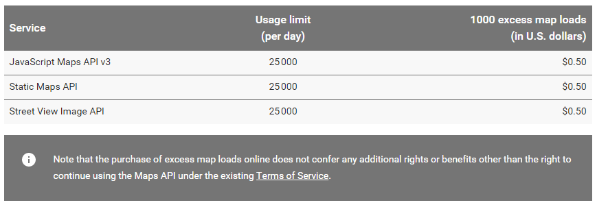
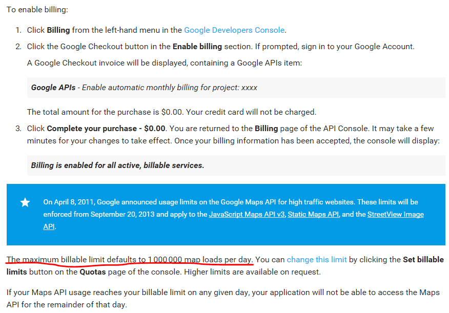
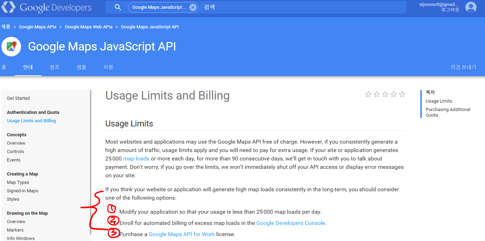

Google Maps JavaScript API v3 결제관련
- 참고 문서:
https://developers.google.com/maps/documentation/javascript/usage
1. Google Maps JavaScript API v3만 따로 결제가 가능한가?
- 가능합니다. 25,000 건 초과시 1000건 초과마다 0.5 US달러(50 센트)가 자동으로 이체된다고 합니다.
- 결제 안내 페이지:
https://console.developers.google.com/project

2. 따로 결제가 가능하다면 비용이 얼마 드는가?
- 위에 말씀드린대로 25,000건에서 1,000건 초과시마다 0.5 US달러(50 센트)가 부과됩니다.
3. 통합 결제 해야 한다면 비용이 얼마 드는가?
- 라이센스를 결제하는 방식인 것 같은데,
https://console.developers.google.com/
1. 위 링크로 들어가셔서 좌측 메뉴의 Billing을 클릭합니다.
2. Enable billing 영역 안에 있는 Google Checkout 버튼을 클릭합니다. 그렇게 하면 구글 체크아웃 인보이스가 나타나는데, 다음 구글 API 아이템을 포함합니다:
Google APIs - Enable automatic monthly billing for project: xxxx
구매의 총 가격은 0.00 달러입니다. 신용카드에 과금이 되지 않습니다.
3. Complete your purchase - $0.00 을 클릭합니다. 그러면 다시 API 콘솔의 Billing 페이지로 돌아오게 됩니다. 설정 변경을 적용하는데 몇 분 정도 걸릴 수 있습니다. 과금 정보가 확인되면 콘솔은 다음과 같은 메세지를 출력합니다:
Billing is enabled for all active, billable services.
- 이같은 자동 이체를 사용할 경우 로드 리밋을 25,000건에서 최대 1,000,000건까지 증가시킬 수 있다고 합니다.

4. 무료 할당량이 월마다 갱신 되는가?
- 제가 이해하고 있는 것이 맞다면, 하루에 보여지는 무료 맵 로드의 한계치가 25,000 건이고 그 이후에는 위와 같이 과금이 된다고 하는 것 같습니다.
- 라이센스의 가격 자체는 무료지만 구글 맵 API를 쓰는 기업은 반드시 라이센스를 등록하고, 그 다음에 위와 같은 과금이 적용되는 방식인건지,
아니면 라이센스 등록할때 상담을 거쳐서 가격을 정한다는 것인지는 잘 이해하지 못했습니다.
- 아래 이미지는 하루 맵 로드가 25,000건 이상일때 대응하는 방법 세 가지에 대한 해결 방법인데 팀장님께서 전달해주신 것과 내용 자체는 같아보입니다.
